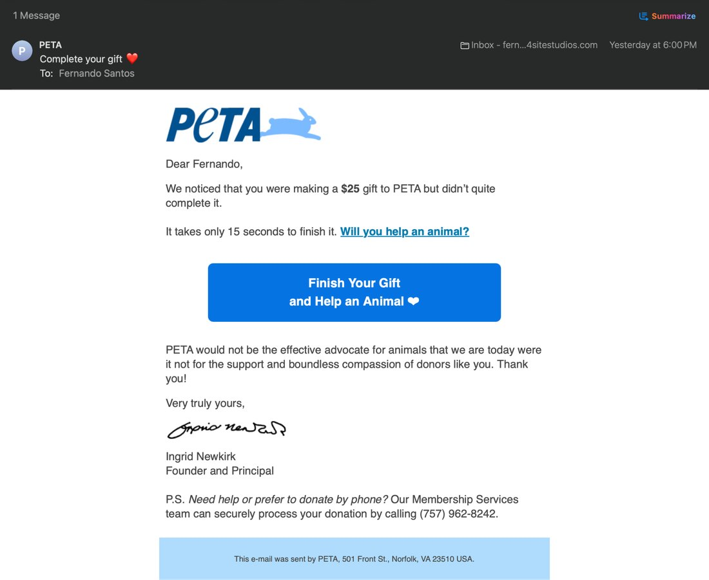

BBryan
Recovering abandoned gifts
Donors start a gift, get pulled away, and the money walks out the door. For PETA we built a microservice that captures the intent the moment a donation begins. If the gift is not finished in 30 minutes, an automated email goes out with a link straight back to the pre-filled form, delivered through Engaging Networks.
28,211sessions tracked
2,543recovery emails
482gifts completed
19%email to donation
$26,174recovered
